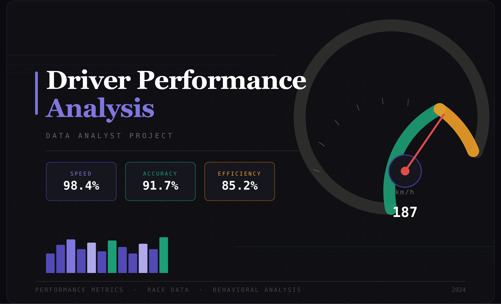
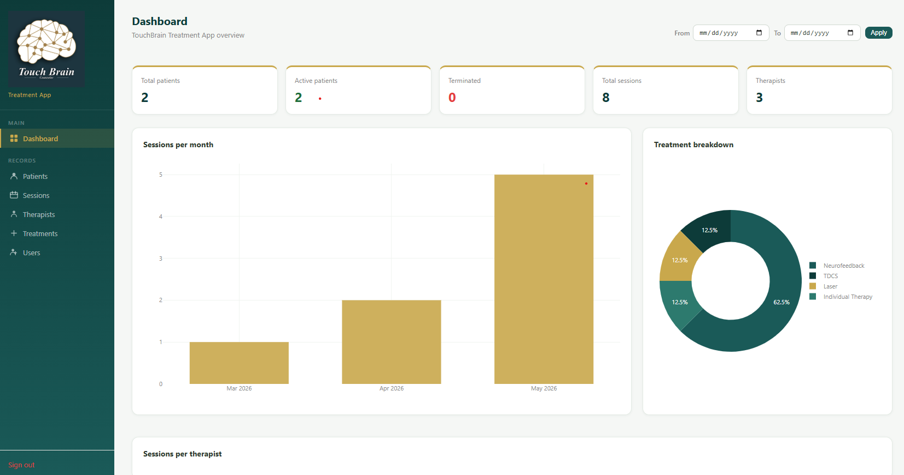

Projects
Route Profitability Analysis
Analyzed 361K operational records across 14 tables to identify loss-making transportation routes. Used SQL window functions and Power BI to surface that routes under 557 miles consistently run negative margins — down to -641% — and that NY→Philadelphia was the single worst-performing lane.


Driver Performance Analysis
Evaluated revenue, fuel cost, and safety incidents for an entire driver fleet using SQL and Python. Found that only ~7% of drivers fall below 60% profit margin, and that longer-distance drivers are significantly more fuel-efficient — giving management a clear target for route assignment optimization.

Car Sales Price Analysis & Prediction
Built regression models (linear, polynomial, pipeline) to predict used car prices using Python and scikit-learn. Identified the top features driving price variance and compared model accuracy across approaches, demonstrating end-to-end machine learning workflow.

TouchBrain Clinic Management System
Built and deployed a full-stack clinic management system for TouchBrain Counseling Clinic in Coquitlam, BC. Handles patient records, therapy sessions, treatment tracking, and reporting — with JWT authentication, role-based access control, interactive dashboards, and a printable patient profile. Built with Python/Flask, PostgreSQL on Supabase, and deployed live on Render.

About Me
I'm a Data Analyst based in Vancouver, BC with 5+ years of experience turning messy operational data into decisions that actually get made. I've worked across logistics, e-commerce, and healthcare — building SQL pipelines, Power BI dashboards, and Python models that help teams stop guessing and start acting on evidence. I enjoy the full cycle: finding the question worth asking, digging into the data, and presenting findings in a way that non-technical stakeholders can act on. Outside of work I'm always working on a new data project — a few of which you can see above.
Get in Touch
Have a question or want to connect? Feel free to reach out — I'm always open to new opportunities
morteza.kanani25@gmail.com